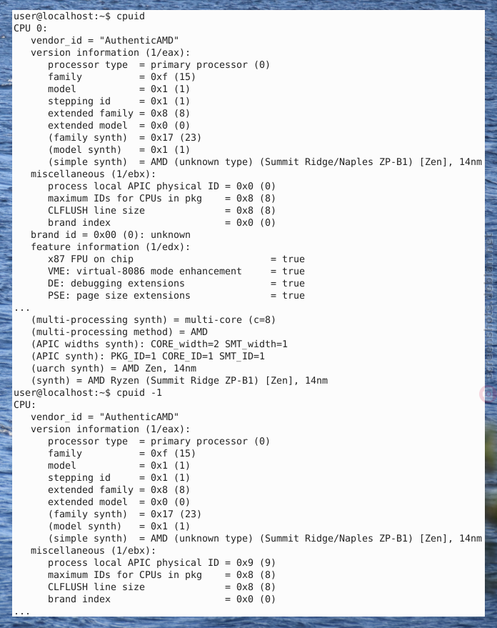
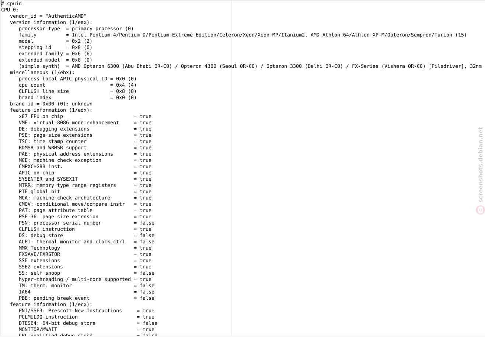
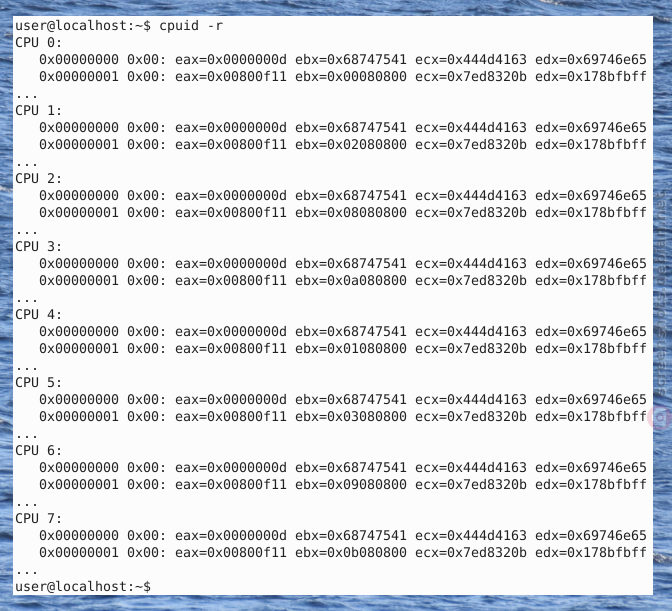
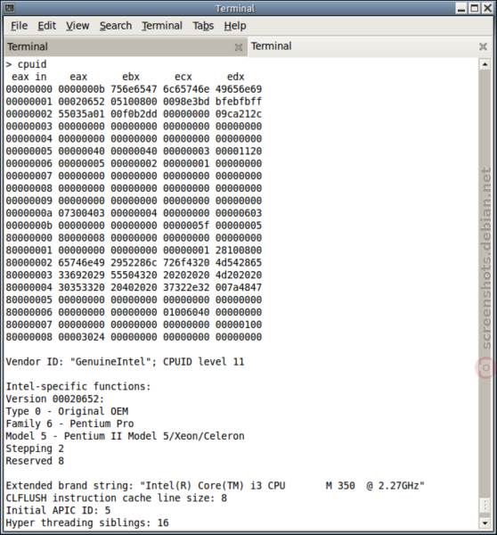

We believe security software like Kicksecure needs to remain Open Source and independent. Would you help sustain and grow the project? Learn more about our 14 year success story and maybe DONATE!
System identity camouflageAdvanced DocumentationSignifyPrevious page: System identity camouflageIndex page: Advanced DocumentationNext page: SignifyCPUID - Security and Privacy Risks

CPUID is a processor function that allowing software to discover the model and capabilities of the processor. This can be a security or privacy risk.
Introduction
To avoid confusion, it is being mentioned that there are two different things:
- CPUID: This wiki page.
- PPIN:
Protected Processor Identification Number(PPIN)
As for CPUID, there are two different cases.
- A) Remote CPUID: Even if the user has JavaScript enabled in their browser, websites cannot remotely detect the user's CPU model and capabilities.
- B) Local CPUID: Unfortunately, locally running applications can use the non-privileged CPU instruction CPUID. This cannot be prevented. This issue is unspecific to Kicksecure.
The technical background of these two cases is being elaborated below.
CPUID Information
What information does CPUID give?
Any information that is related to Processor including the design of the Processor can be fetched using CPUID instructions. For example, we can get the following information using CPUID using different leaf values:
* Processor Vendor name
- Processor name, Serial number
- Number of Cores
- Features supported like AVX512
- L1, L2 and L3 Cache Size
- Cache Topology
- Thermal and Power Management
CPUID Screenshots
Author of screenshots: screenshots.debian.net/package/cpuid
Figure: cpuid Screenshot 1 /
4
Figure: cpuid Screenshot 2 /
4

Figure: cpuid Screenshot 3 /
4

Figure: cpuid Screenshot 4 /
4

CPUID Technical Background
- Importance of this wiki chapter: If the reader is time-poor, the rest of the text inside this box can be skipped.
- Affected operating systems: All. This issue is unspecific to Kicksecure.
- Affected computers: All Intel and AMD CPUs are affected since 1993.
- Workarounds available? None. There are also no virtualizers capable to hide this information. Perhaps emulators might be able to hide this information since the CPU is fully emulated (as opposed to be being virtualized) but these are too slow to be considered for production use.
- CPUID technical introduction: Quote cpuid
man page (Underline added.):
The CPUID instruction can be directly executed by a program using inline assembler. However this device allows convenient access to all CPUs without changing process affinity. Most of the information in cpuid is reported by the kernel in cooked form either in /proc/cpuinfo or through subdirectories in /sys/devices/system/cpu. Direct CPUID access through this device should only be used in exceptional cases.
- Remote websites: Cannot fingerprint the user to remotely
detect the the user's CPU model and capabilities. There are no test
pages that claim to do it. One websites might make a first impression
that it can be done, but it's not possible, see cpuid visualizer. A
different project, CPUID in
JavaScript cannot do it either. While JavaScript is often viewed as
synonym with the browser, JavaScript can also be used with out a
browser. The CPUID in JavaScript program might work with JavaScript on a
server but not with JavaScript in a browser.
- Popular demand by many website owners: Many people asked about this generally on stackexchange (detecting hardware information using JavaScript) but nobody had a solution for CPU model and capabilities specifically.
- No live demonstration available: There is no hosted web service that demonstrates this feature. At least a few of the many Browser Tests would implement this. Specifically likely the popular Fingerprint.com improve their service with CPUID if this was possible.
- Specifically asking: This question has been specifically directed at only project that does something similar to this, which is CPUID in JavaScript. The project does not claim it works in browsers. Question for this specifically has been asked anyhow, see Can cpuid x86 in JavaScript run inside a browser?
- AmIUnique feature request: detect CPUID using JavaScript - reply received in summary: Not possible.
- Alternative browser API: Since this is not possible, an
alternative browser API feature [https://html.spec.whatwg.org/multipage/workers.html#navigator.hardwareconcurrency)
navigator.hardwareConcurrency] was implemented by browsers vendors. - Alternative to CPUID: The closest alternative to CPU fingerprinting using CPUID that has been found is WebCPU.
- Non-solutions: Even security-misc's
hide-hardware-info.servicecannot hide CPUID. - Future: The Kicksecure project will not be able to fix the CPUID issue. At author if this wiki page is not aware of any virtualizer or kernel project which is interested in "hardware privacy". Very few related bug reports / feature requests exist. Users, researchers and developers interested in getting this issue fixed are encouraged to use the principles of Generic Bug Reporting and Self Support First Policy, in short, reproduce, describe the issue without reference to Kicksecure and contact upstream projects (such as virtualizers, kernel) directly.
- Related: VM Fingerprinting
- References:
- Upstream bug reports / feature requests:
- Qubes unfixed, rejected bug report: Stop telling VMs the exact physical CPU model in the computer
- Forum discussions:
- For developers:
- The research paper Virtualization Detection: New Strategies and Their Effectiveness mentions CPUID several times and shares some ideas how leaking sensitive information using CPUID could be avoided.
- https://security.stackexchange.com/questions/220357/fake-output-of-cpuid-instruction
- https://github.com/torvalds/linux/blob/master/arch/x86/kvm/cpuid.c
- Upstream bug reports / feature requests:
cpuid usage
cpuid is a program that uses the processor's cpuid
function and shows its result.
Note, that the availability or unavailability of the
cpuid from the package repository is irrelevant. This is
because the CPU's cupid function is a non-privileged instruction.
Meaning, any other application could easily call the same CPU
function.
Optional: Users interested to learn more or view their CPUID could
use cpuid.
1. Open a terminal.
Platform specific. Select your platform.
Kicksecure USER Session
If you are using a graphical Kicksecure with LXQt, complete the following steps.
Start menu → System Tools →
QTerminal
Kicksecure SYSMAINT Session
In the System Maintenance Panel, under the
Misc section,
click Open Terminal.Kicksecure-Qubes
If you are using Kicksecure-Qubes, complete the following steps.
Qubes App Launcher (blue/grey "Q") →
Kicksecure App Qube (commonly named kicksecure)
→ QTerminal
2. Software installation
Install package(s) cpuid following these
instructions:
1 Platform specific notice.
- Kicksecure: No special notice.
- Kicksecure-Qubes: In Template.
2 Update the package lists and upgrade the system.
sudo apt update && sudo apt full-upgrade
3
Install the cpuid package(s).
Using apt command line --no-install-recommends option is in
most cases optional.
sudo apt install --no-install-recommends cpuid
4 Platform specific notice.
- Kicksecure: No special notice.
- Kicksecure-Qubes: Shut down Template and restart App Qubes based on it as per Qubes Template Modification.
5 Done.
The procedure of installing package(s) cpuid is
complete.
3. Run cpuid.
cpuid
4. Done.
The process of showing information from the processor's cpuid function has been completed.
CPUID visualizer
CPUID visualizer:
See also this CPUID visualizer. The CPUID visualizer does not claim to be a detector, does not claim to be a browser test that can remotely detect the user's CPUID.
/proc/cpuinfo versus cpuid
On Linux systems, there are at least two ways to access CPU information.
- A)
/proc/cpuinfo: Is a virtual file provided by the kernel providing information about the CPU.- To view, run: cat /proc/cpuinfo
hide-hardware-info.servicecan prevent access to this virtual file.
- B)
cpuid: Is a program that queries the CPU's cpuid function directly to get information about the CPU.- To view, see above chapter
cpuidusage. - This cannot be prevented, see CPUID Technical Background.
- To view, see above chapter
CPU Fingerprinting
A related topic is CPU fingerprinting. Even if the non-privileged CPU instruction CPUID could be disabled, there would be more issues.
CPUs are fingerprintable in many more ways than simply checking CPUID (for example, you can try to use features not advertised on CPUID and see what happens).Jean-Philippe Ouellet, Qubes contributor is Qubes issue Stop telling VMs the exact physical CPU model in the computer
CPUID Spoofing Testing
This wiki chapter documents ways to check if any potential ways of CPUID spoofing are effective. It does not provide instructions on how to perform CPUID spoofing which might be impossible on the Intel / AMD64 platform.
run twice and compare method:
1. Run
cpuid (or an alternative, if any is available) before
making any attempts of CPUID spoofing. Store its output in a text file
cpuid1.txt.
2. Apply any possibly available steps to spoof the CPUID.
The user could experiment with emulators such as bochs, virtualizers such as VirtualBox and its settings [1] or other options.
3. Run
cpuid again. Store its output in text file
cpuid2.txt.
4. Compare the two text files.
Due to the lengthy output of cpuid with many different
details, manually comparing the two files could be cumbersome and
error-prone. Instead, using a file comparison tool of the user's choice is
recommended.
Technical Challenges
[...] CPU model with various details (the CPUID instruction) that is essential for the system within the VM to function correctly (to know what instructions it can use, to know what mitigations against speculative execution should be applied etc). Masking some of of it is potentially possible (like pretending you are running on a CPU from 10 years ago), with all the disadvantages of it.Marek (Qubes OS lead developer) in Qubes issue Stop telling VMs the exact physical CPU model in the computer
Superficial Hiding
This is just a pointer. Superficial hiding in context of Xen, Qubes might be possible. See Qubes OS forums discussion Spoofing the CPU name. Unsupported by Kicksecure.
How about non-superficial, comprehensive hiding? Not possible. Please refer to the rest of this wiki page.
Related
- VM Fingerprinting
Footnotes
Categories: Design